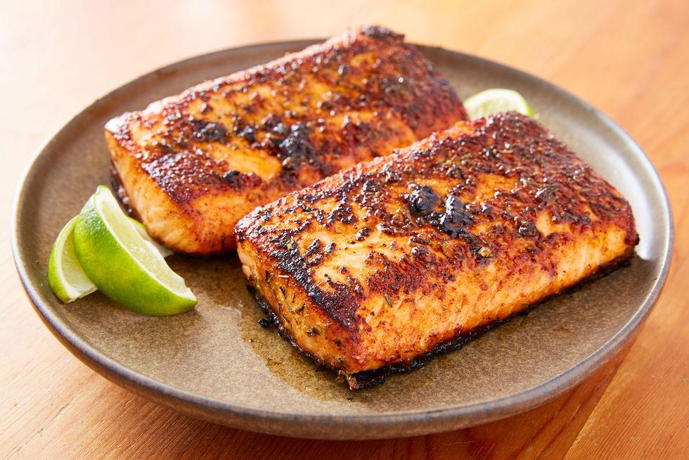

Blackened Salmon Fillets

Blackened Salmon Fillet is a game-changer.
The technique involves seasoning the fish, in this case salmon, well and cooking it in a very hot pan with a decent amount of butter. The results are intensely flavoured salmon with a crust like exterior that's dark, but not burnt, and tender flaky salmon that isn't dried out from being over cooked. The salmon will have a small kick to it, but isn't overpowering and a fresh squeeze of lime juice mellows out the heat for a perfect bite.
Ingredients
- 2 tablespoons ground paprika
- 1 tablespoon ground cayenne pepper
- 1 tablespoon onion powder
- 2 teaspoons salt
- ½ teaspoon ground white pepper
- ½ teaspoon ground black pepper
- ¼ teaspoon dried thyme
- ¼ teaspoon dried basil
- ¼ teaspoon dried oregano
- 4 salmon fillets, skin and bones removed
- ½ cup unsalted butter, melted
Steps
- Mix paprika, cayenne pepper, onion powder, salt, white and black pepper, thyme, basil, and oregano together in a small bowl.
- Brush salmon fillets on both sides with 1/4 cup butter, and sprinkle evenly with the spice mixture.
- Heat 2 tablespoons melted butter in a large, heavy skillet over high heat. Add salmon and cook until blackened, 2 to 5 minutes. Lift fillets, add remaining melted butter to the skillet, and flip fillets into the butter. Cook until the other side is blackened and fish flakes easily with a fork, 3 to 5 minutes.